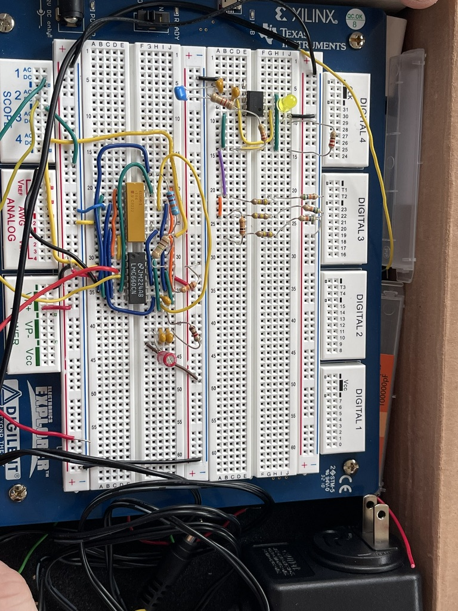
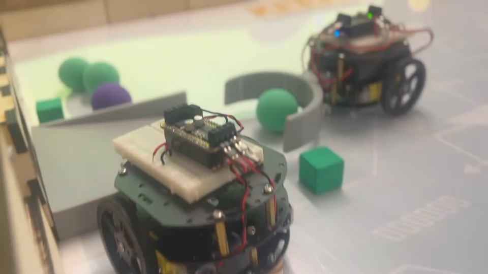

Hardware, simulation, and design work, from medical device manufacturing to cancer research.
Ranked #1 among selectable senior design projects for its potential to help cancer research. Within a 3-person team, I independently owned three of the four major subsystems.
Electrode array — designed and validated to produce clinically relevant Tumor Treating Field intensities (1–3 V/cm), confirmed in COMSOL and on real hardware.
Electrical Impedance Tomography — a low-cost imaging system (USB-6009, Digilent Explorer Board, MUX/DeMux switching) with custom MATLAB acquisition and EIDORS reconstruction, visualizing cellular electrical properties to enable personalized treatment planning. Working at the mV scale meant real-world noise — electrode drift, breadboard interference — limited image clarity, but the underlying reconstruction approach held up.
AR Visualization — built in Blender for the Meta Quest 3, translating COMSOL particle-tracing and flow data into a space you can walk into, resize with your hands, and sit inside of, complete with in-experience tutorials.
I also modeled acoustic radiation force in COMSOL to tune cell-clustering frequency near the PZT's resonance, and built CAD models for the slide, electrode array, and field-test mechanism.

A three-stage build for clinics with unreliable power and scarce electrodes: a TLC551 oscillator simulating sinus, bradycardia, and tachycardia rhythms; a resistor-ladder circuit producing a realistic 1 mV signal on a 300 mV bias; and a Butterworth bandstop filter cutting 60 Hz noise by 40.886 dB — beating the 40 dB target.
A Wheatstone bridge circuit reading two conductive stretch sensors to detect lateral lean, zeroed with dual potentiometers. A bicolor LED array gave intuitive, real-time visual feedback — redder as the patient leaned further to either side.

Proposed and advocated for a ramp-based scoring design across a 7-person team: one bot controlled a ramp to reach the three-point goals while two others used plows to feed balls in. Resolved material-interference and ramp-sizing tradeoffs; the design was adopted and placed 2nd in competition.
Invited by faculty advisor Dr. Matthew Solomito onto an ongoing clinical research program. Work progressed from pre/post-operative balance testing, to pitching biomechanics research, to authoring a manuscript from faculty-provided statistics:
Michaud E, Solomito MJ, Davis S. "Frailty Score Predicts Peri-Hospital Recovery and Healthcare Utilization Following Surgical Treatment of Hip Fractures." Journal of Orthopedic Trauma. Under review.
Michaud E, Solomito MJ, Davis S. "Frailty Score Predicts Peri-Hospital Recovery and Healthcare Utilization Following Surgical Treatment of Hip Fractures." Abstract submitted to AAOS 2027 Annual Meeting.
Identified a data-entry inefficiency on the manufacturing floor on my own initiative and designed an app-based solution using Power Apps, Power BI, Power Automate, and SharePoint Lists — presented to the team and certified as part of Yellow Belt training. The tool ultimately wasn't adopted, as management prioritized other floor issues at the time — a good reminder that a working solution and an approved one aren't always the same thing.